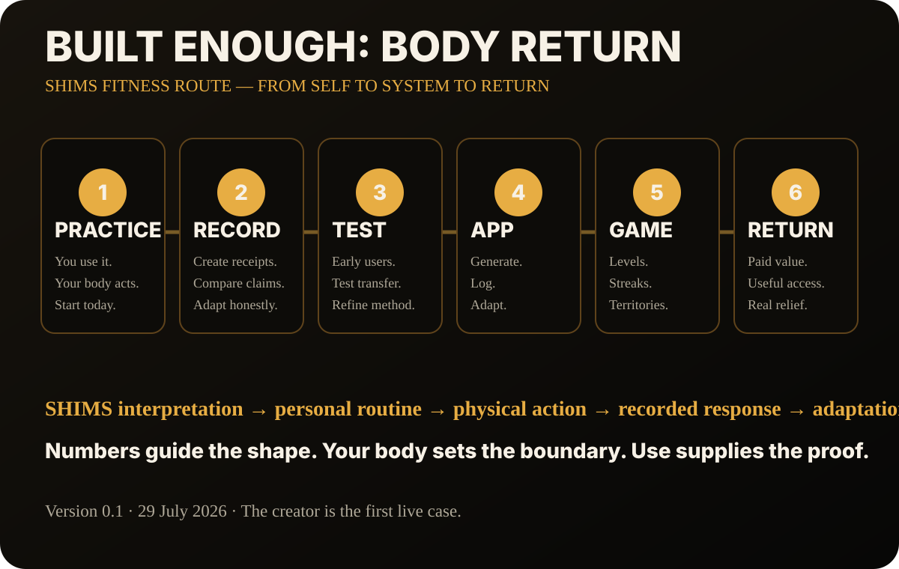

RIGHT NOW
0 today
Turn this moment into movement
Starting, finishing, waiting, celebrating or resetting can become a small physical return.
BUILT ENOUGH
I’ve built enough. Now something needs to come back into my life.
Numbers guide the shape. Your body sets the boundary. The moment creates the opening. Use supplies the proof.
Your date of birth creates the symbolic pattern. Your current capacity decides what is realistic today.
Starting, finishing, waiting, celebrating or resetting can become a small physical return.
The moment engine needs a baseline before it can make a small, personal movement suggestion.
Choose the moment. BODY RETURN will generate a small dose rather than a full workout.
Best-effort local reminders. They work most reliably while this app remains open or installed; reopening the app catches overdue nudges.
Date and number patterns create meaning, identity and routine structure. No medical causation is claimed.
Your logs show what happened for you, under these conditions, at this point in time.
Public-health targets provide general context; they are not an individual diagnosis or prescription.
The moment engine creates a suggestion from your inputs. You still choose whether, how or whether not to perform it.
